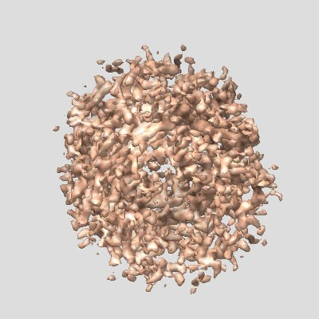
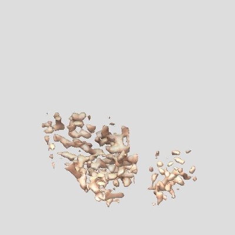
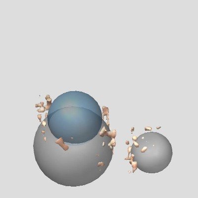
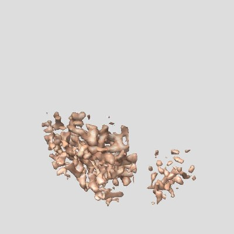
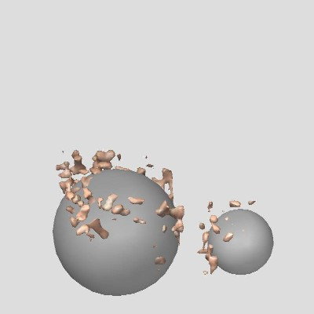
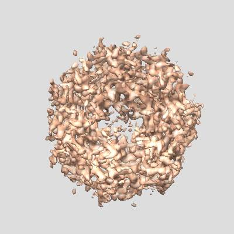
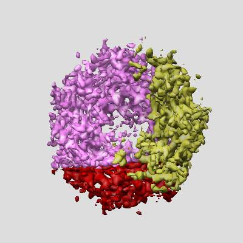
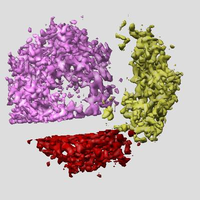
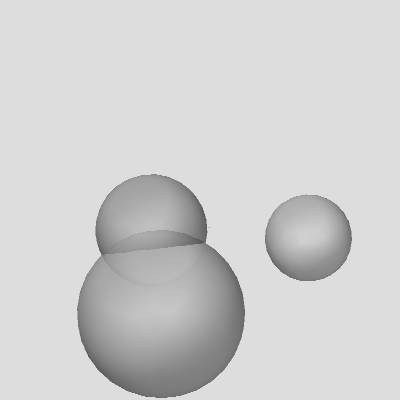

The Segment Marker module is a part of the Segment Volume package used for segmentating volume data. The module is a Chimera extension module. To use this module, the Segment Menu module of the Segment Volume package is required. You will need the Chimera and EMAN software packages to use this module. The module interacts with Volume Viewer, a Chimera module for visualizing 3D volume data.
Segment Marker Segment Marker uses simple regions such as a cubes to segment out multiple regions inside the volume data (MRC format) and create a new volume data file(s) (MRC format) with the segmented region. The simple regions are specified using a set of markers.
Note: This version of the Segment Volume package is a pre-release version.
The module files are stored in the directory SegmentSimple. To list the module under Chimera's Tools menu, add the directory - containing - the SegmentSimple directory to Chimera's list of Tools.
To do so, open Chimera's main window, choose Perferences under Favorites menu, then choose the Tools category and then Add the directory - containing - the SegmentSimple directory. This will list the tool under AIRS on the Tools menu.
To start the module from the Chimera menu, first you will need to ensure that the module is listed under Chimera's Tools menu. Then, click on Segment Marker in the AIRS menu, under Chimera's Tools menu.
Alternatively, you can use the command line tool in Chimera's IDLE tool (under Programming tools on the Tools menu), and type:
>>> import SegmentSimple
>>> SegmentSimple.simple.show_seg_marker_dialog()
The Segment Marker module currently uses EMAN and Chimera software and hence the input/output data formats are restricted to those supported by both these software packages.
The Segment Marker dialog panel has four main sections. The first section is the Input data section. The Data file menu automatically lists available data regions in Chimera's Volume Viewer. To select a data set, simply pick an entry from this menu. The size of the data set in pixels is automatically displayed on the dialog, below the menu. If the data set is displayed in Chimera, then the Displayed value is set to Yes.
To open new models, click the Open button below the menu. This will open Chimera's Volume Viewer dialog and an Open file browser dialog. After adding the models, if the models are not listed on the data menu, click the Refresh menu button, next to the Open button on the Segment Marker dialog.
Alternatively, you can directly open new models using Chimera's Volume Viewer. Once again, if the newly opened models are not displayed on the data menu, hit the Refresh menu button.
This section allows you to pick a marker set (see Chimera's Volume Path module) to specify the regions on the Chimera main window.
To open new marker sets, click the Open button below the marker menu. This will open Chimera's Volume Path dialog and an Open file browser dialog. After adding the marker sets, if the marker sets are not listed on the marker menu, click the Refresh list button, next to the Open button on the Segment Marker dialog.
Alternatively, you can directly open new marker sets using Chimera's Volume Path. Once again, if the newly opened marker sets are not displayed on the marker set menu, hit the Refresh list button.
More on using the marker sets to specify segment regions follows later.
In this section, the choice of the segmentation type is made using Choose type radiobutton. The number of output files used is specfied by using the Output files radiobutton. The File MRC specifies the name of the output file, and hitting the Apply button performs the segmentation.
After hitting the Apply button, the parameters of the marker sets are checked for validity.
The output data section has an Output data menu that lists the current segmented output files. To open or display the file in Chimera, click on the Show button. If more than one output file was created, then you can click on Show All button to open and display all the files on the menu.
The Hide button closes the model (associated with the file on the Output data menu) in Chimera, but leaves the entry on the Volume Viewer data menu unchanged. The Hide All button applies the Hide button to all the files on the output data menu.
The Remove All button removes all the entries on the Output data menu, but leaves the corresponding entries (if any) on the Volume Viewer data menu unchanged.
The Close button closes the Segment Marker dialog. The Help button opens this help page.
For the Box selection in Segmentation Info section, each marker specifies the location of a box region with the Box Size parameter in the Parameters section specifiying the size of the box and the marker location specifying the center of the box. If the Box Size is not specified or set to 0, then the marker diameter is used.
If the Box Size parameters is not specified or is 0 and the Output files radiobutton is set to single, then the marker note parmeter (see Volume Path module in Chimera) can be used to specify regions that we want to zero out, by setting the note to -, i.e., a minus sign. The marker is called a negative marker. In this scenario, all the box regions corresponding to positive markers are first segmented out from the map, and then from the resulting map, the box regions corresponding to the negative markers are set to zero.
The Near option in Choose type radio button of the Segmentation Info section, corresponds to the nearest neigborhood segmentation. Each of the input markers' location is used to identify a neighborhood.
In this option, the Output files radiobutton is set to Mutiple.
Marker center parameters should be integers corresponding to the center of the box in terms of pixels (in object coordinates). The Marker radius parameters or the Box Size parameter should be set such that, the box region corresponding to a marker cannot fully lie outside the original map region.
Each marker is specified using (x,y,z) location values. The marker radius (r) or the Box Size parameter specified in Angstroms can be used to specify the size of a box region, when using with the first option - Box type segmentation on the Choose type radiobutton.
If the Box Size parameter is not specified or if it is zero, then the marker diameter (via marker radius) is used instead. Using the marker radius allows to specify differnet box sizes associated with each marker.
To place markers, move markers, setting the marker radius, or to add a note to a maker, use the Volume Path dialog in Chimera.
The buttons Show and Hide next to Boxes (in Parameters section) can be used to display the boxes corresponding to each selected marker. The box center corresponds to the marker center and the box size corresponds to the marker radius. To refresh, simply hit the Show button.

Original map


Segmented map from three markers (left). The image on the right
is with markers, the blue marker being negative.


Segmented map from two markers - negative marker removed (left).
The image on the right is with the markers.


Original map (left). Nearest neighborhood segmented map (right).


Segmented map regions separated (left) and the input marker set (right).
The size of the markers is irrelevant here.
The EMAN software package is required to use this module. One of the common problems when using this module, is that of EMAN's integration into Chimera's environment. This module interacts with EMAN using the Python script file boxes.py, which is executed from the OS command line. So, before using the module, ensure that the EMAN's Python libraries are available from within Chimera's Python environment.
To edit the markers, use the mouse buttons to select the marker. Once selected you can move the marker, or change the radius, or add/remove marker notes. While saving a marker set, ensure that the marker set name is changed to an appropriate name instead of the default name. This will help different between the differnet marker sets easily.